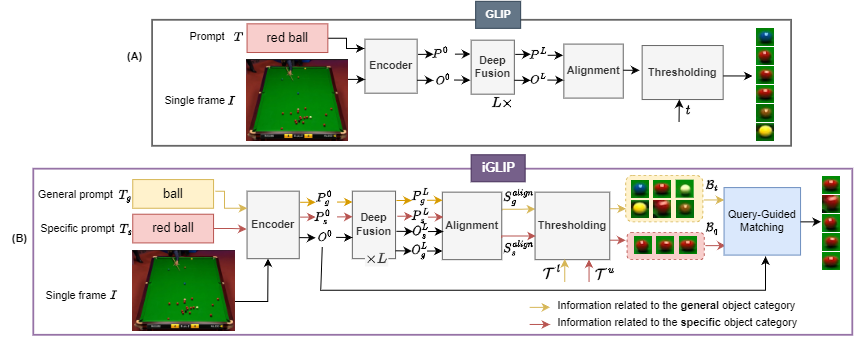

Figure 1: Comparison between existing methods with our current framework Z-GMOT for zero shot object detection
Track only red athletes
Track only cars with white headlights on the left side road
Demand for zero-shot tracking
Multiple Object Tracking (MOT) plays a crucial role in diverse real-world scenarios, such as surveillance, security, autonomous driving, robotics, biology, etc. Despite recent significant progress, Multi-Object Tracking (MOT) faces limitations such as reliance on prior knowledge and predefined categories, and struggles with unseen objects, and understanding the object attributes. To address this, Generic Multiple Object Tracking (GMOT) requires less prior information, but existing GMOT methods rely on initial bounding boxes and struggle with variations e.g., viewpoint, lighting, occlusion, scale, etc. We propose Z-GMOT, capable of tracking never-seen categories with no training examples, without predefined categories or initial bounding boxes. Our approach includes iGLIP, an improved Grounded language-image pretraining, for accurately detecting unseen objects with specific characteristics. Addressing challenges in tracking high-similarity objects within the same category, we introduce MA-SORT, which integrates motion and appearance-based matching. Extensive evaluation on GMOT-40 dataset, AnimalTrack test set, DanceTrack validation set demonstrates substantial improvements.
Limitations of existing tracking methods?
What are the problems with current MOT methods?
We realize that current MOT methods suffer from several limitations:
(1) They heavily depend on prior knowledge of tracking targets, which is only able to track vehicles and pedestrians, and require costly annotation efforts for large labeled datasets. => There are a lot of essential demands to detect and track unseen objects. => By applying a Vision-Language object detector (VL-OD) like GLIP into tracking, we propose a novel tracking framework Z-GMOT, to track arbitrary objects in zero-shot.
(2) However, the existing VL-ODs like GLIP struggle to localize objects with specific characteristics like color, shape, etc. => We need a mechanism to help the GLIP detect more accurately by focusing more on objects' attributes thus this results in our proposed iGLIP.
(3) they are limited in handling objects with indistinguishable appearances. => The association model in second stage needs to focus more on motion rather than appearance because the objects have high similar appearance. => That is our motivation to propose MA-SORT tracker
Vision Language object detector - GLIP:
In recent years, the abundance of image-text pairs on the Internet has given rise to the emergence of Vision-Language (VL) models, which combine the ability to comprehend visual data with natural language processing capabilities. Apart from traditional one-hot vector labels, semantic meanings and captions can be utilized, making CV tasks more flexible and capable of handling open-world scenarios by identifying novel concepts in real-world applications and recognizing previously unseen categories.
However, we empirically noticed several limitations of GLIP as follows
Limitation 1 - High False Positives: Current object recognition models, like GLIP, perform well for general categories (e.g., 'car') but struggle with specific details (e.g., 'red car'). At high thresholds, important objects are often missed, while at low thresholds, incorrect objects are identified. Balancing this trade-off is challenging, making it hard to achieve optimal performance for specific object categories.

Limitation 2 - Deep fusion in GLIP weakens proposal features when dealing with specific object category: GLIP uses text embedding to process and represent information, but it faces challenges in recognizing specific object categories. The impact of text embedding varies, either enhancing (for general objects) or weakening (for specific objects) the features of proposed objects. This inconsistency affects the overall performance of GLIP, especially for categories that involve detailed property descriptions.
Z-GMOT
Based on the advancements of recent works in multi-modal, we propose a method which we believe is the future of multi-object tracking - Z-GMOT, a cutting-edge paradigm that seamlessly integrates Natural Language Processing (NLP) to redefine the way we perceive and interact with visual data. Z-GMOT stands at the forefront of innovation, offering unparalleled precision in tracking objects by leveraging advanced linguistic input.
Above we have an example of a single image encapsulates a multitude of intricacies: a bustling scene with various cars, each unique in its color and characteristics. With Z-GMOT, the paradigm transcends traditional limitations, effortlessly tracking not only the generic "all cars" but also delving into the realm of specificity with distinctions such as "red car," "yellow car," and "blue car."
In our exclusive demonstration, you can see the proficiency of Z-GMOT as it navigates through a captivating image, dynamically tracking and distinguishing between cars based on their color. Picture the finesse with which this paradigm adapts to your natural language queries, discerning the subtle nuances that set each car apart from the rest.
Methodology
In our approach, we've developed innovative techniques to improve the way we track objects in diverse scenarios. We introduce two key components: iGLIP and MA-SORT.
iGLIP: Smarter Object Recognition
To overcome challenges in recognizing specific objects, we've enhanced GLIP. Using improved prompts and a clever matching mechanism, iGLIP accurately identifies objects, even those with detailed characteristics, without being misled by irrelevant information.
Up until now, the challenge of precisely detecting objects with rich details has remained a formidable task, especially when using Vision-Language Large Models (V-LLMs). These models, while powerful, often demand significant time and resources. Unfortunately, their smaller counterparts tend to fare even worse in performance. Our approach introduces a transformative solution to this issue. Think of it as a sophisticated filter that effectively weeds out incorrect detections — what we call 'False Positives.' This enhances the overall accuracy of the system. The key here is that even within a single category, objects can have diverse characteristics, which sometimes confuses the Vision-Language (VL) model. Our method smartly navigates these complexities, ensuring a more reliable and precise object detection
MA-SORT: More Accurate Tracking
Our innovative second component, MA-SORT, elevates the precision of object tracking to new heights. This advanced method merges motion and appearance cues, empowering our system to track objects with remarkable accuracy. This is particularly effective in challenging situations where relying solely on appearance could lead to confusion — imagine trying to differentiate between multiple, similar-looking objects. MA-SORT cleverly blends these two crucial elements, adjusting their importance based on real-time evidence and calculations. This dynamic adaptation allows for more dependable and accurate tracking across a variety of scenarios, ensuring that objects are followed with unparalleled precision.